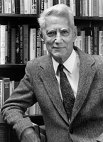

Claude E. Shannon(1916-2001) hat wohl am nachhaltigsten die Informationstechnik beeinflusst, vielfach heißt es sogar, er habe das Bit erfunden oder die Digitaltechnik begründet. Auf alle Fälle hat seine fundamentale Arbeit "Eine mathematische Theorie der Kommunikation" (A Mathematical Theory of Communication) die Informationstheorie geschaffen, letztlich sogar das Wort "Information". Bereits in seiner Master Thesis von 1937 "Eine symbolische Analyse von Relaisschaltkreisen" entwickelt Shannon weit vor den digitalen Anwendungen quasi die "Schaltalgebra". John V. Atanasoff and Clifford Berry bauen den ersten Computer mit Vakuum-Röhren.